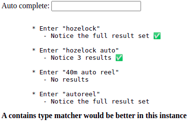
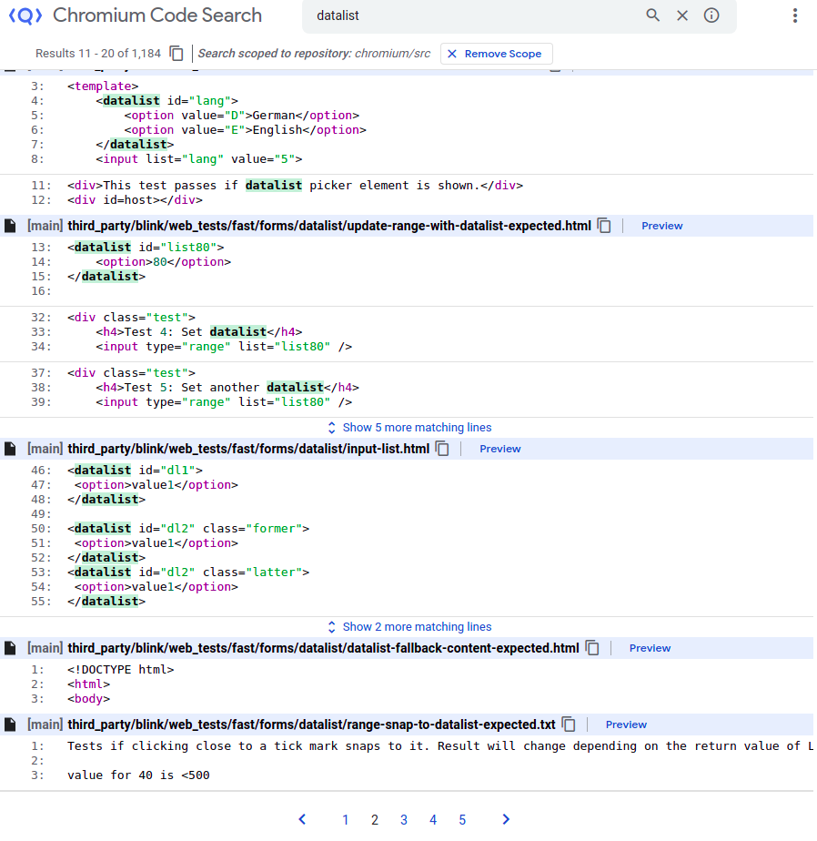
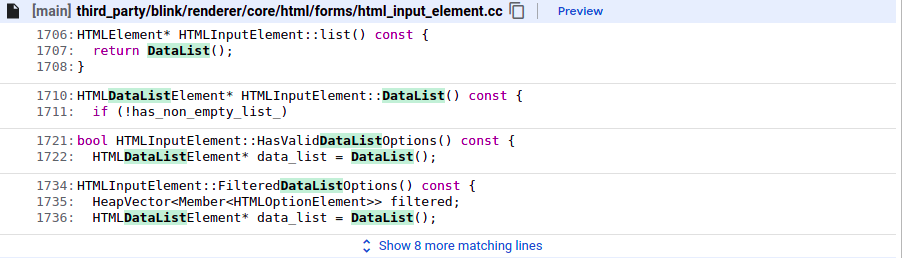

크로미엄의 이슈를 탐색하다가 드디어 이해 가능한 이슈를 발견했다. 내가 크로미엄에서 첫번째로 해결한 이슈다.
Issue 설명

위 사진은 Issue를 보고한 분이 올려준 html 파일이다. 설명은 간단하다.
1
2
3
4
5
6
<datalist id="DataListId">
<option value="2485">Hozelock 10m Mini Auto Reel - 2485</option>
<option value="2401">Hozelock Auto Reel 20m - 2401</option>
<option value="2403">Hozelock Auto Reel 30m - 2403</option>
<option value="2595">Hozelock Auto Reel 40m - 2595</option>
</datalist>
위와 같은 datalist가 있으면 “hozelock”을 입력했을 때, 모든 결과가 나오고 “hozelock auto”를 입력했을 때 3개의 결과가 나온다. 그리고 “40m auto reel”을 입력했을 때 아무런 결과가 나오지 않는다. “autoreel”을 입력했을 때도 아무런 결과가 나오지 않는다.
이 이슈의 보고자가 원하는 것은 “40m auto reel”을 입력했을 때도 결과가 나오길 원하고 “autoreel”을 입력했을 때도 결과가 나오길 원하는 것이다.
어디에 Bug가 살고 있을까?
보통 Good-first-bug는 버그가 어디에 살고 있을지 대략 짐작되는 위치를 알려준다. 하지만 이 이슈는 그렇지 않았다. 막막하지만 한번 천천히 고민해보자.
나는 제일 먼저 https://source.chromium.org/chromium/chromium/src 에 들어갔다. 로컬에서 소스코드를 다운 받아 탐색하는 것보다 이 사이트에 들어가 탐색하는 것이 더 편하다.
여기서 대략 짐작되는 여러가지 키워드를 검색했다. 나는 여러 키워드를 검색해보았는데 그 중 datalist라는 키워드가 길을 찾게 해주었다.

위처럼 여러 결과가 나온다. 페이지를 넘겨가며 하나 하나 봐주면 된다. 일단 내가 고칠 파일은 html 파일은 아닐테고 cc 파일일 것이다. cc파일을 위주로 보던 중 심상치 않은 녀석을 발견했다.

뭔가 냄새가 술술 풍기지 않는가? 일단 들어가본다. 들어가보면 엄청난 양의 소스코드가 존재한다. 이 중 심상치 않은 함수명을 발견한다.
1
HTMLInputElement::FilteredDataListOptions() const {};
함수 내용도 확인하니 이것이 맞을 것 같다는 확신이 든다.
조금 더 정확한 확신을 위해서 로그를 찍어본다. 다음과 같은 코드를 함수에 추가한다.
1
DLOG(INFO) << "test";
보고자 분이 올려주신 html 파일을 실행시켜 보았을 때 로그가 찍히는 것을 확인할 수 있다. 그럼 어디에 이슈가 살고 있는지 알았으니 해결해보자.
이슈 해결하기
이 이슈를 해결하기 위해 다름과 같은 알고리즘을 만들었다.
- split input into “40m” and “autoreel”
- for each element(“40m”, “autoreel”)
- transform target into trans_target(“hozelockautoreel40m”)
- find element from tran_target
- if not found, break
위와 같이 코드를 짠 다음에 로컬에서 빌드했을 때 제대로 돌아가는 것을 확인했다. 하지만 리뷰를 요청했을 때 몇개의 테스트에서 에러가 발생하는 것을 확인했고, 그 에러는 아무것도 입력되지 않았을 때 전체 옵션이 떠야하는데 내가 짠 코드는 무언가 입력되기 전까지는 아무런 동작도 하지 않았다.
더군다나 리뷰어가 크로미엄 안에 이미 짜놓은 함수(WordBreakIterator)들을 적극 사용하라고 했기에 다시 chromium 소스를 검색할 수 있는 사이트에 들어가 WordBreakIterator를 검색했다.
그렇게 WordBreakerIterator를 다른 사람이 어떻게 사용했는지 공부한 다음 알고리즘을 수정할 수 있었다.
Test 파일을 추가
나같은 경우 test 파일을 추가했다. 기존의 기능을 개선한 경우에 속하기 때문에 test case를 보고자가 올려준 test file을 기반으로 수정했다.
1
html_input_element_test.cc
이 test file은 gtest로써 C++로 작성되었다. 해당 파일의 적절한 위치에 test를 추가해준다.
Merge 완료
이렇게 Merge가 완료되었다!